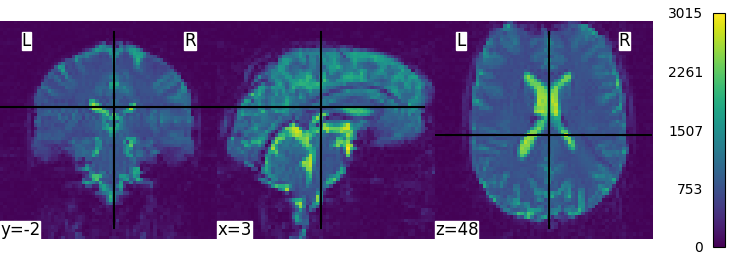
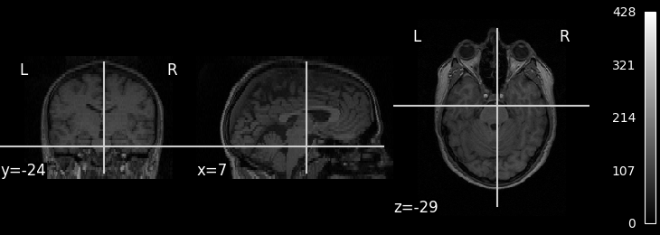

Note
Click here to download the full example code or to run this example in your browser via Binder
9.4.4.1.5. Intro to GLM Analysis: a single-session, single-subject fMRI dataset#
In this tutorial, we use a General Linear Model (GLM) to compare the fMRI signal during periods of auditory stimulation versus periods of rest.
The analyse described here is performed in the native space, directly on the original EPI scans without any spatial or temporal preprocessing. (More sensitive results would likely be obtained on the corrected, spatially normalized and smoothed images).
9.4.4.1.5.1. The data#
The dataset comes from an experiment conducted at the FIL by Geraint Rees under the direction of Karl Friston. It is provided by FIL methods group which develops the SPM software.
According to SPM documentation, 96 scans were acquired (repetition time
TR = 7s) in one session. The paradigm consisted of alternating periods
of stimulation and rest, lasting 42s each (that is, for 6 scans). The session
started with a rest block. Auditory stimulation consisted of bi-syllabic words
presented binaurally at a rate of 60 per minute. The functional data starts at scan
number 4, that is the image file fM00223_004.
The whole brain BOLD/EPI images were acquired on a 2T Siemens MAGNETOM Vision system. Each scan consisted of 64 contiguous slices (64x64x64 3mm x 3mm x 3mm voxels). Acquisition of one scan took 6.05s, with the scan to scan repeat time (TR) set arbitrarily to 7s.
9.4.4.1.5.2. Retrieving the data#
Note
In this tutorial, we load the data using a data downloading
function. To input your own data, you will need to provide
a list of paths to your own files in the subject_data variable.
These should abide to the Brain Imaging Data Structure (BIDS)
organization.
from nilearn.datasets import fetch_spm_auditory
subject_data = fetch_spm_auditory()
subject_data.func # print the list of names of functional images
['/home/alexis/nilearn_data/spm_auditory/sub001/fM00223/fM00223_004.img', '/home/alexis/nilearn_data/spm_auditory/sub001/fM00223/fM00223_005.img', '/home/alexis/nilearn_data/spm_auditory/sub001/fM00223/fM00223_006.img', '/home/alexis/nilearn_data/spm_auditory/sub001/fM00223/fM00223_007.img', '/home/alexis/nilearn_data/spm_auditory/sub001/fM00223/fM00223_008.img', '/home/alexis/nilearn_data/spm_auditory/sub001/fM00223/fM00223_009.img', '/home/alexis/nilearn_data/spm_auditory/sub001/fM00223/fM00223_010.img', '/home/alexis/nilearn_data/spm_auditory/sub001/fM00223/fM00223_011.img', '/home/alexis/nilearn_data/spm_auditory/sub001/fM00223/fM00223_012.img', '/home/alexis/nilearn_data/spm_auditory/sub001/fM00223/fM00223_013.img', '/home/alexis/nilearn_data/spm_auditory/sub001/fM00223/fM00223_014.img', '/home/alexis/nilearn_data/spm_auditory/sub001/fM00223/fM00223_015.img', '/home/alexis/nilearn_data/spm_auditory/sub001/fM00223/fM00223_016.img', '/home/alexis/nilearn_data/spm_auditory/sub001/fM00223/fM00223_017.img', '/home/alexis/nilearn_data/spm_auditory/sub001/fM00223/fM00223_018.img', '/home/alexis/nilearn_data/spm_auditory/sub001/fM00223/fM00223_019.img', '/home/alexis/nilearn_data/spm_auditory/sub001/fM00223/fM00223_020.img', '/home/alexis/nilearn_data/spm_auditory/sub001/fM00223/fM00223_021.img', '/home/alexis/nilearn_data/spm_auditory/sub001/fM00223/fM00223_022.img', '/home/alexis/nilearn_data/spm_auditory/sub001/fM00223/fM00223_023.img', '/home/alexis/nilearn_data/spm_auditory/sub001/fM00223/fM00223_024.img', '/home/alexis/nilearn_data/spm_auditory/sub001/fM00223/fM00223_025.img', '/home/alexis/nilearn_data/spm_auditory/sub001/fM00223/fM00223_026.img', '/home/alexis/nilearn_data/spm_auditory/sub001/fM00223/fM00223_027.img', '/home/alexis/nilearn_data/spm_auditory/sub001/fM00223/fM00223_028.img', '/home/alexis/nilearn_data/spm_auditory/sub001/fM00223/fM00223_029.img', '/home/alexis/nilearn_data/spm_auditory/sub001/fM00223/fM00223_030.img', '/home/alexis/nilearn_data/spm_auditory/sub001/fM00223/fM00223_031.img', '/home/alexis/nilearn_data/spm_auditory/sub001/fM00223/fM00223_032.img', '/home/alexis/nilearn_data/spm_auditory/sub001/fM00223/fM00223_033.img', '/home/alexis/nilearn_data/spm_auditory/sub001/fM00223/fM00223_034.img', '/home/alexis/nilearn_data/spm_auditory/sub001/fM00223/fM00223_035.img', '/home/alexis/nilearn_data/spm_auditory/sub001/fM00223/fM00223_036.img', '/home/alexis/nilearn_data/spm_auditory/sub001/fM00223/fM00223_037.img', '/home/alexis/nilearn_data/spm_auditory/sub001/fM00223/fM00223_038.img', '/home/alexis/nilearn_data/spm_auditory/sub001/fM00223/fM00223_039.img', '/home/alexis/nilearn_data/spm_auditory/sub001/fM00223/fM00223_040.img', '/home/alexis/nilearn_data/spm_auditory/sub001/fM00223/fM00223_041.img', '/home/alexis/nilearn_data/spm_auditory/sub001/fM00223/fM00223_042.img', '/home/alexis/nilearn_data/spm_auditory/sub001/fM00223/fM00223_043.img', '/home/alexis/nilearn_data/spm_auditory/sub001/fM00223/fM00223_044.img', '/home/alexis/nilearn_data/spm_auditory/sub001/fM00223/fM00223_045.img', '/home/alexis/nilearn_data/spm_auditory/sub001/fM00223/fM00223_046.img', '/home/alexis/nilearn_data/spm_auditory/sub001/fM00223/fM00223_047.img', '/home/alexis/nilearn_data/spm_auditory/sub001/fM00223/fM00223_048.img', '/home/alexis/nilearn_data/spm_auditory/sub001/fM00223/fM00223_049.img', '/home/alexis/nilearn_data/spm_auditory/sub001/fM00223/fM00223_050.img', '/home/alexis/nilearn_data/spm_auditory/sub001/fM00223/fM00223_051.img', '/home/alexis/nilearn_data/spm_auditory/sub001/fM00223/fM00223_052.img', '/home/alexis/nilearn_data/spm_auditory/sub001/fM00223/fM00223_053.img', '/home/alexis/nilearn_data/spm_auditory/sub001/fM00223/fM00223_054.img', '/home/alexis/nilearn_data/spm_auditory/sub001/fM00223/fM00223_055.img', '/home/alexis/nilearn_data/spm_auditory/sub001/fM00223/fM00223_056.img', '/home/alexis/nilearn_data/spm_auditory/sub001/fM00223/fM00223_057.img', '/home/alexis/nilearn_data/spm_auditory/sub001/fM00223/fM00223_058.img', '/home/alexis/nilearn_data/spm_auditory/sub001/fM00223/fM00223_059.img', '/home/alexis/nilearn_data/spm_auditory/sub001/fM00223/fM00223_060.img', '/home/alexis/nilearn_data/spm_auditory/sub001/fM00223/fM00223_061.img', '/home/alexis/nilearn_data/spm_auditory/sub001/fM00223/fM00223_062.img', '/home/alexis/nilearn_data/spm_auditory/sub001/fM00223/fM00223_063.img', '/home/alexis/nilearn_data/spm_auditory/sub001/fM00223/fM00223_064.img', '/home/alexis/nilearn_data/spm_auditory/sub001/fM00223/fM00223_065.img', '/home/alexis/nilearn_data/spm_auditory/sub001/fM00223/fM00223_066.img', '/home/alexis/nilearn_data/spm_auditory/sub001/fM00223/fM00223_067.img', '/home/alexis/nilearn_data/spm_auditory/sub001/fM00223/fM00223_068.img', '/home/alexis/nilearn_data/spm_auditory/sub001/fM00223/fM00223_069.img', '/home/alexis/nilearn_data/spm_auditory/sub001/fM00223/fM00223_070.img', '/home/alexis/nilearn_data/spm_auditory/sub001/fM00223/fM00223_071.img', '/home/alexis/nilearn_data/spm_auditory/sub001/fM00223/fM00223_072.img', '/home/alexis/nilearn_data/spm_auditory/sub001/fM00223/fM00223_073.img', '/home/alexis/nilearn_data/spm_auditory/sub001/fM00223/fM00223_074.img', '/home/alexis/nilearn_data/spm_auditory/sub001/fM00223/fM00223_075.img', '/home/alexis/nilearn_data/spm_auditory/sub001/fM00223/fM00223_076.img', '/home/alexis/nilearn_data/spm_auditory/sub001/fM00223/fM00223_077.img', '/home/alexis/nilearn_data/spm_auditory/sub001/fM00223/fM00223_078.img', '/home/alexis/nilearn_data/spm_auditory/sub001/fM00223/fM00223_079.img', '/home/alexis/nilearn_data/spm_auditory/sub001/fM00223/fM00223_080.img', '/home/alexis/nilearn_data/spm_auditory/sub001/fM00223/fM00223_081.img', '/home/alexis/nilearn_data/spm_auditory/sub001/fM00223/fM00223_082.img', '/home/alexis/nilearn_data/spm_auditory/sub001/fM00223/fM00223_083.img', '/home/alexis/nilearn_data/spm_auditory/sub001/fM00223/fM00223_084.img', '/home/alexis/nilearn_data/spm_auditory/sub001/fM00223/fM00223_085.img', '/home/alexis/nilearn_data/spm_auditory/sub001/fM00223/fM00223_086.img', '/home/alexis/nilearn_data/spm_auditory/sub001/fM00223/fM00223_087.img', '/home/alexis/nilearn_data/spm_auditory/sub001/fM00223/fM00223_088.img', '/home/alexis/nilearn_data/spm_auditory/sub001/fM00223/fM00223_089.img', '/home/alexis/nilearn_data/spm_auditory/sub001/fM00223/fM00223_090.img', '/home/alexis/nilearn_data/spm_auditory/sub001/fM00223/fM00223_091.img', '/home/alexis/nilearn_data/spm_auditory/sub001/fM00223/fM00223_092.img', '/home/alexis/nilearn_data/spm_auditory/sub001/fM00223/fM00223_093.img', '/home/alexis/nilearn_data/spm_auditory/sub001/fM00223/fM00223_094.img', '/home/alexis/nilearn_data/spm_auditory/sub001/fM00223/fM00223_095.img', '/home/alexis/nilearn_data/spm_auditory/sub001/fM00223/fM00223_096.img', '/home/alexis/nilearn_data/spm_auditory/sub001/fM00223/fM00223_097.img', '/home/alexis/nilearn_data/spm_auditory/sub001/fM00223/fM00223_098.img', '/home/alexis/nilearn_data/spm_auditory/sub001/fM00223/fM00223_099.img']
We can display the first functional image and the subject’s anatomy:
from nilearn.plotting import plot_stat_map, plot_anat, plot_img
plot_img(subject_data.func[0], colorbar=True, cbar_tick_format="%i")
plot_anat(subject_data.anat, colorbar=True, cbar_tick_format="%i")
- 
- 
<nilearn.plotting.displays._slicers.OrthoSlicer object at 0x7f9e824f9690>
Next, we concatenate all the 3D EPI image into a single 4D image, then we average them in order to create a background image that will be used to display the activations:
9.4.4.1.5.3. Specifying the experimental paradigm#
We must now provide a description of the experiment, that is, define the timing of the auditory stimulation and rest periods. This is typically provided in an events.tsv file. The path of this file is provided in the dataset.
import pandas as pd
events = pd.read_table(subject_data['events'])
events
9.4.4.1.5.4. Performing the GLM analysis#
It is now time to create and estimate a FirstLevelModel object, that will generate the design matrix using the information provided by the events object.
from nilearn.glm.first_level import FirstLevelModel
Parameters of the first-level model
t_r=7(s) is the time of repetition of acquisitions
noise_model=’ar1’ specifies the noise covariance model: a lag-1 dependence
standardize=False means that we do not want to rescale the time series to mean 0, variance 1
hrf_model=’spm’ means that we rely on the SPM “canonical hrf” model (without time or dispersion derivatives)
drift_model=’cosine’ means that we model the signal drifts as slow oscillating time functions
high_pass=0.01(Hz) defines the cutoff frequency (inverse of the time period).
fmri_glm = FirstLevelModel(t_r=7,
noise_model='ar1',
standardize=False,
hrf_model='spm',
drift_model='cosine',
high_pass=.01)
Now that we have specified the model, we can run it on the fMRI image
One can inspect the design matrix (rows represent time, and columns contain the predictors).
Formally, we have taken the first design matrix, because the model is implictily meant to for multiple runs.
from nilearn.plotting import plot_design_matrix
plot_design_matrix(design_matrix)
import matplotlib.pyplot as plt
plt.show()
Save the design matrix image to disk first create a directory where you want to write the images
import os
outdir = 'results'
if not os.path.exists(outdir):
os.mkdir(outdir)
from os.path import join
plot_design_matrix(
design_matrix, output_file=join(outdir, 'design_matrix.png'))
The first column contains the expected response profile of regions which are sensitive to the auditory stimulation. Let’s plot this first column
plt.plot(design_matrix['active'])
plt.xlabel('scan')
plt.title('Expected Auditory Response')
plt.show()
9.4.4.1.5.5. Detecting voxels with significant effects#
To access the estimated coefficients (Betas of the GLM model), we created contrast with a single ‘1’ in each of the columns: The role of the contrast is to select some columns of the model –and potentially weight them– to study the associated statistics. So in a nutshell, a contrast is a weighted combination of the estimated effects. Here we can define canonical contrasts that just consider the two effects in isolation —let’s call them “conditions”— then a contrast that makes the difference between these conditions.
from numpy import array
conditions = {
'active': array([1., 0., 0., 0., 0., 0., 0., 0., 0., 0., 0., 0., 0., 0., 0.,
0.]),
'rest': array([0., 1., 0., 0., 0., 0., 0., 0., 0., 0., 0., 0., 0., 0., 0.,
0.]),
}
We can then compare the two conditions ‘active’ and ‘rest’ by defining the corresponding contrast:
active_minus_rest = conditions['active'] - conditions['rest']
Let’s look at it: plot the coefficients of the contrast, indexed by the names of the columns of the design matrix.
from nilearn.plotting import plot_contrast_matrix
plot_contrast_matrix(active_minus_rest, design_matrix=design_matrix)
<AxesSubplot:label='conditions'>
Below, we compute the estimated effect. It is in BOLD signal unit, but has no statistical guarantees, because it does not take into account the associated variance.
eff_map = fmri_glm.compute_contrast(active_minus_rest,
output_type='effect_size')
In order to get statistical significance, we form a t-statistic, and directly convert it into z-scale. The z-scale means that the values are scaled to match a standard Gaussian distribution (mean=0, variance=1), across voxels, if there were no effects in the data.
z_map = fmri_glm.compute_contrast(active_minus_rest,
output_type='z_score')
9.4.4.1.5.6. Plot thresholded z scores map#
We display it on top of the average functional image of the series (could be the anatomical image of the subject). We use arbitrarily a threshold of 3.0 in z-scale. We’ll see later how to use corrected thresholds. We will show 3 axial views, with display_mode=’z’ and cut_coords=3.
Statistical significance testing. One should worry about the statistical validity of the procedure: here we used an arbitrary threshold of 3.0 but the threshold should provide some guarantees on the risk of false detections (aka type-1 errors in statistics). One suggestion is to control the false positive rate (fpr, denoted by alpha) at a certain level, e.g. 0.001: this means that there is 0.1% chance of declaring an inactive voxel, active.
from nilearn.glm import threshold_stats_img
_, threshold = threshold_stats_img(z_map, alpha=.001, height_control='fpr')
print('Uncorrected p<0.001 threshold: %.3f' % threshold)
plot_stat_map(z_map, bg_img=mean_img, threshold=threshold,
display_mode='z', cut_coords=3, black_bg=True,
title='Active minus Rest (p<0.001)')
plt.show()
Uncorrected p<0.001 threshold: 3.291
The problem is that with this you expect 0.001 * n_voxels to show up while they’re not active — tens to hundreds of voxels. A more conservative solution is to control the family wise error rate, i.e. the probability of making only one false detection, say at 5%. For that we use the so-called Bonferroni correction.
_, threshold = threshold_stats_img(
z_map, alpha=.05, height_control='bonferroni')
print('Bonferroni-corrected, p<0.05 threshold: %.3f' % threshold)
plot_stat_map(z_map, bg_img=mean_img, threshold=threshold,
display_mode='z', cut_coords=3, black_bg=True,
title='Active minus Rest (p<0.05, corrected)')
plt.show()
Bonferroni-corrected, p<0.05 threshold: 4.934
This is quite conservative indeed! A popular alternative is to control the expected proportion of false discoveries among detections. This is called the False discovery rate.
False Discovery rate = 0.05 threshold: 2.904
Finally people like to discard isolated voxels (aka “small clusters”) from these images. It is possible to generate a thresholded map with small clusters removed by providing a cluster_threshold argument. Here clusters smaller than 10 voxels will be discarded.
We can save the effect and zscore maps to the disk.
z_map.to_filename(join(outdir, 'active_vs_rest_z_map.nii.gz'))
eff_map.to_filename(join(outdir, 'active_vs_rest_eff_map.nii.gz'))
We can furthermore extract and report the found positions in a table.
/home/alexis/singbrain/repo/nilearn/nilearn/reporting/_get_clusters_table.py:212: UserWarning: Attention: No clusters with stat higher than 2.903531892142391
warnings.warn(
This table can be saved for future use.
table.to_csv(join(outdir, 'table.csv'))
9.4.4.1.5.7. Performing an F-test#
“active vs rest” is a typical t test: condition versus baseline. Another popular type of test is an F test in which one seeks whether a certain combination of conditions (possibly two-, three- or higher-dimensional) explains a significant proportion of the signal. Here one might for instance test which voxels are well explained by the combination of the active and rest condition.
Specify the contrast and compute the corresponding map. Actually, the contrast specification is done exactly the same way as for t- contrasts.
import numpy as np
effects_of_interest = np.vstack((conditions['active'], conditions['rest']))
plot_contrast_matrix(effects_of_interest, design_matrix)
plt.show()
z_map = fmri_glm.compute_contrast(effects_of_interest,
output_type='z_score')
Note that the statistic has been converted to a z-variable, which makes it easier to represent it.
Oops, there is a lot of non-neural signal in there (ventricles, arteries)…
Total running time of the script: ( 0 minutes 28.699 seconds)
Estimated memory usage: 316 MB